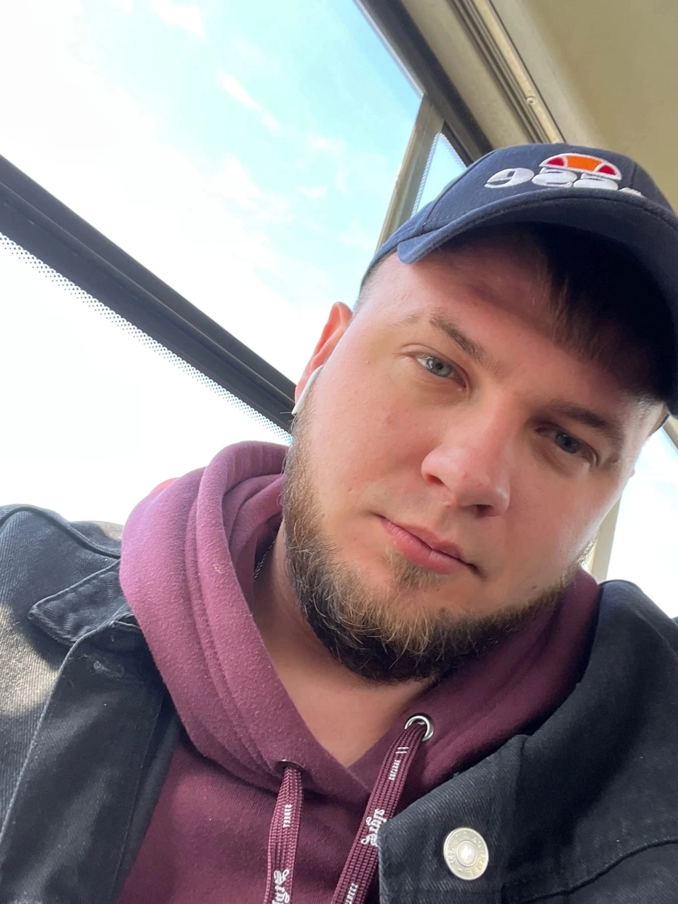

Александр
История жизни и памяти
Человек живёт, пока жива память о нём. Эта страница хранит историю Александра — его путь, увлечения, характер и моменты, дорогие его близким.
Детство
Музыка, семья и первые мечты
Детство Александра прошло в многодетной семье. У него была старшая сестра Виктория и младший брат Иван. Несмотря на разницу в возрасте, им удавалось весело и задорно проводить время вместе. Детство было наполнено играми, друзьями, смехом и маленькими шалостями.
Мама Саши, Светлана, заметила музыкальный талант сына и сделала всё, чтобы он мог его развивать. Александр освоил баян и окончил музыкальную школу на отлично, а затем продолжил заниматься музыкой и взялся за гитару.
У него было много друзей, с которыми он играл в разные игры. Преподаватели всегда отзывались о нём хорошо, хотя Саша любил немного похулиганить. Ведь настоящее детство — это ещё и озорство, приключения и воспоминания, которые спустя годы вызывают улыбку.
Юность и учёба
Первые шаги во взрослую жизнь
После десяти классов школы Александр поступил в строительный техникум, чтобы освоить специальность архитектора. Он с интересом учился, набирался опыта и участвовал в различных мероприятиях — творческая жизнь всегда была ему близка.
Александр жил в студенческом общежитии, и началась его самостоятельная взрослая жизнь. Во многом ему помогло воспитание мамы Светланы: с детства она учила сына заботиться о себе, следить за своим внешним видом и уметь самостоятельно приготовить себе еду. Эти навыки помогали ему уверенно справляться с повседневными заботами.
Военная служба
Честь, ответственность и товарищество
После окончания техникума Александр принял серьёзное решение — пройти срочную военную службу. Он служил в воздушно-десантных войсках на Дальнем Востоке, в городе Уссурийске. Несмотря на большое расстояние от дома, он достойно прошёл этот год службы.
За время службы Александр обрёл боевых товарищей, получил награды за отличную службу и совершил три учебных прыжка с парашютом. Маме приходили благодарственные письма — повод гордиться сыном, который ответственно относился к своему делу.
Взрослая жизнь
Работа, развитие и новые места
После учёбы и армии Александр пробовал себя в разных направлениях. Он принимал участие в строительстве бассейна стадиона «Арена», а затем решил попробовать силы в сфере продаж — ему нравилось живое общение с людьми.
Он быстро развивал профессиональные навыки, набирался опыта и был одним из лучших в коллективе, часто оказываясь в центре внимания. Позже Александр переехал в Москву и продолжил заниматься любимым делом.
Помимо работы, он любил гулять по городу, открывать новые места и делиться фотографиями с семьёй. Даже в обычных моментах он находил что-то интересное и хотел оставаться на связи с близкими.
Характер
Доброе сердце и сильная воля
Александр был добрым человеком, умел сопереживать и поддерживать людей в трудную минуту. При этом его характер был сильным: если он чего-то хотел, то добивался этого с завидным упорством.
Любая несправедливость глубоко его возмущала. Он старался бороться за правду, защищать слабых и не оставаться в стороне, когда кому-то требовалась поддержка.
В нём сочетались твёрдость характера и чуткость к другим людям — качества, которые близкие могли видеть в его поступках и отношении к окружающим.
Моменты жизни
Фотографии и воспоминания
Каждый снимок хранит частичку истории. Нажмите на фотографию, чтобы рассмотреть её крупнее.
Семейный архив
Воспоминания близких
Здесь можно добавить личные истории родных и друзей, любимые выражения Александра и воспоминания о событиях, которые особенно дороги семье.
Голос и послания
Голос Александра
Если сохранились аудиозаписи или видео, их можно разместить здесь, чтобы будущие поколения могли услышать голос и увидеть живые моменты семейной истории.
Медиафайл можно добавить позже
Путь жизни
Важные этапы
Пока мы помним — они рядом
Пусть эта страница сохранит историю Александра для родных, друзей и будущих поколений.